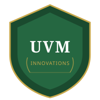

Forms, funding, facilities, accelerators, and contacts — everything you need to move your innovation forward at UVM.

First Steps
Before anything else, these are the three things every researcher should know about.
The formal first step. Submit before any public disclosure of your research. UVM Innovations uses this to evaluate commercial potential and IP strategy.
Submit via UVM Innovations →Sign one before discussing your unpublished work with any external party — potential licensees, collaborators, or investors. Protects your patent eligibility.
Request a CDA →Not sure if your work qualifies? Just ask. UVM Innovations offers free, confidential consultations. There's no commitment required to have the first conversation.
Email innovate@uvm.edu →UVM Programs
UVM offers a range of programs to help researchers and students develop their innovations — from initial customer discovery to startup launch.
National 7-week customer discovery program. Learn to validate market demand through 100+ stakeholder interviews. Required stepping stone for many SBIR applicants.
UVM's student experiential learning program. Student teams partner with faculty innovations to conduct market research, customer discovery, and commercialization planning. Launched 2021.
Vermont's early-stage biomedical startup accelerator. Provides mentorship from industry experts, business plan development, investor readiness coaching, and network access.
Structured commercialization support for UVM innovations across all fields. Provides market analysis, IP strategy guidance, and connections to potential partners.
Medically focused entrepreneurship training at UVM. Designed for researchers and clinicians developing health technologies, diagnostics, devices, or therapeutics.
UVM's online marketplace for available technologies. Researchers can list their inventions; companies can browse for licensing opportunities.
Funding Sources
These funding programs are specifically designed to help move research-stage technologies toward commercial or open deployment.
Early-stage seed funding for UVM-based startups. Bridges the gap between academic lab and investor-ready technology. Managed through UVM Innovations.
$275,000 federal grant for feasibility studies. No equity given up. Available from NSF, NIH, USDA, DOE, DoD, and other agencies. Ideal for TRL 3–5 technologies.
Up to $1.8M to complete R&D and move toward market. Requires successful Phase I completion. The primary vehicle for crossing the Valley of Death.
Like SBIR, but requires a formal partnership between the small business and a research institution like UVM. Natural fit for university spinouts. Up to $2M Phase II.
UVM undergraduate and graduate student research funding. Can support early-stage technology development that feeds into a larger IP disclosure.
State-level grants, incentives, and programs for Vermont-based innovation and business development. Complements federal SBIR funding for local startups.
UVM Facilities
UVM provides access to fabrication, prototyping, and specialized research facilities to help move your technology from concept to demonstrable prototype.
Digital fabrication laboratory with 3D printers, laser cutters, CNC machines, and electronics prototyping equipment. Open to all UVM students and researchers.
Specialized facility supporting translational biomedical research. Provides core lab services, equipment access, and connections to clinical collaborators.
High-performance computing cluster for computationally intensive research — AI/ML model training, large-scale simulations, genomics, and climate modeling.
Reading List
These external resources provide deeper context on technology transfer, open science, and the commercialization landscape.
MIT's guide to the technology transfer process — covers disclosure, patents, licensing, and startup formation. A leading model for university IP programs.
tlo.mit.edu →NOAA's Technology Partnerships Office overview of open-source release as a formal tech transfer method. Includes hardware examples.
techpartnerships.noaa.gov →Clear overview of the technology transfer process, the Bayh-Dole Act, and how universities commercialize federally funded research.
scienceinsights.org →The primary hub for all UVM tech transfer activity. Submit disclosures, browse available technologies, find programs, and contact the team.
uvm.edu/uvminnovations →Interactive tool for selecting an open-source license based on your goals. Essential reading before any open-source release.
choosealicense.com →Official federal portal for Small Business Innovation Research and Small Business Technology Transfer grants. Includes solicitation calendars and program guides.
sbir.gov →Get In Touch
The first step is always a conversation. UVM Innovations staff include IP attorneys, technology commercialization professionals, and startup advisors — all available to UVM faculty, staff, and students at no cost.
Email: innovate@uvm.edu
Office: 105 Carrigan Drive, Burlington, VT 05405
Website: uvm.edu/uvminnovations